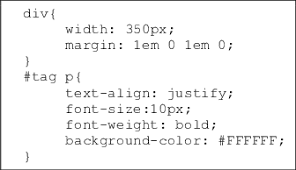

|
What is CSSCSS stands for Cascading Style Sheet, and it's a style sheet that's used to design the layout of a webpage with HTML elements. CSS allows web designers to establish a consistent look across multiple pages of a website. Styles that are often used only need to be declared once in a CSS sheet. Any page that mentions the CSS file can use the style after it is defined in CSS. CSS also makes it simple to update the style of multiple pages at once. CSS can also be used to format other areas of a web page's design. CSS can be used to determine table cell padding, the style, thickness, and color of a table's border, and the padding around images and other objects, for example. The majority of web CSS is used on online sites because it allows for more precise control over the appearance of web pages than HTML alone. |
How do you use CSS
I I The content between the opening and closing tags will be italicised. u> .../u> will highlight it p> ... /p> is a text paragraph; h1>... /h1> is the page's primary header.
|  |